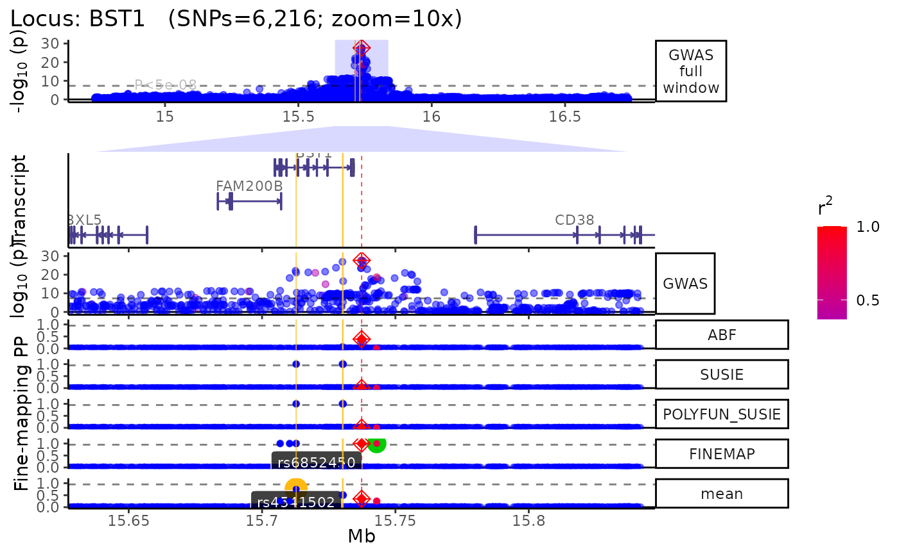
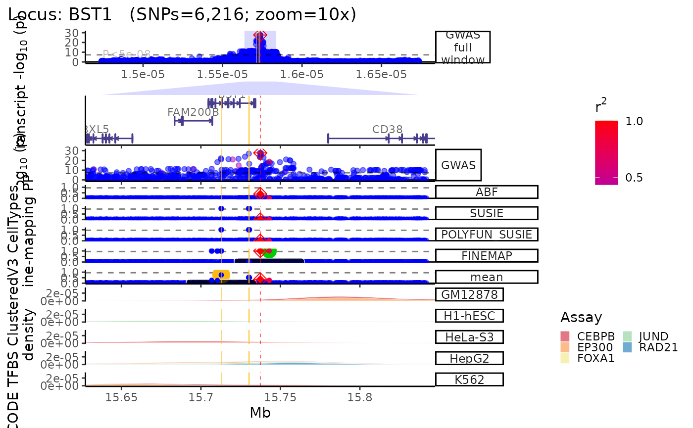
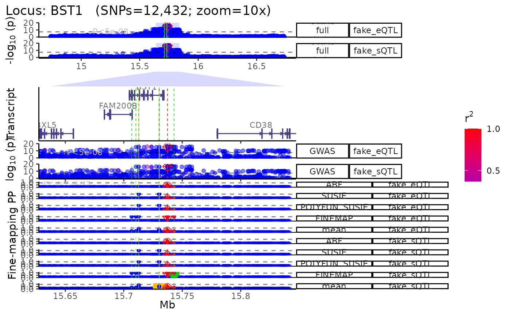

Plot locus
¶ Author:
Brian M. Schilder ¶
¶ Updated:
Nov-06-2022 ¶
Source: vignettes/plot_locus.Rmd
plot_locus.Rmd## Registered S3 method overwritten by 'GGally':
## method from
## +.gg ggplot2## ⠊⠉⠡⣀⣀⠊⠉⠡⣀⣀⠊⠉⠢⣀⡠⠊⠉⠢⣀⡠⠊⠉⠢⣀⡠⠊⠉⠢⣀⡠⠊⠉⠢⣀⡠⠊⠉⠢⣀⡠
## ⠌⢁⡐⠉⣀⠊⢂⡐⠑⣀⠊⢂⡐⠑⣀⠊⢂⡐⠑⣀⠊⢂⡐⠑⣀⠊⢂⡐⠑⣀⠉⢂⡈⠑⣀⠉⢄⡈⠡⣀
## ⠌⡈⡐⢂⢁⠒⡈⡐⢂⢁⠒⡈⡐⢂⢁⠑⡈⡈⢄⢁⠡⠌⡈⠤⢁⠡⠌⡈⠤⢁⠡⠌⡈⡠⢁⢁⠊⡈⡐⢂## ## ── 🦇 🦇 🦇 e c h o l o c a t o R 🦇 🦇 🦇 ─────────────────────────────────## ## ── v2.0.2 ──────────────────────────────────────────────────────────────────────## ⠌⡈⡐⢂⢁⠒⡈⡐⢂⢁⠒⡈⡐⢂⢁⠑⡈⡈⢄⢁⠡⠌⡈⠤⢁⠡⠌⡈⠤⢁⠡⠌⡈⡠⢁⢁⠊⡈⡐⢂
## ⠌⢁⡐⠉⣀⠊⢂⡐⠑⣀⠊⢂⡐⠑⣀⠊⢂⡐⠑⣀⠊⢂⡐⠑⣀⠊⢂⡐⠑⣀⠉⢂⡈⠑⣀⠉⢄⡈⠡⣀
## ⠊⠉⠡⣀⣀⠊⠉⠡⣀⣀⠊⠉⠢⣀⡠⠊⠉⠢⣀⡠⠊⠉⠢⣀⡠⠊⠉⠢⣀⡠⠊⠉⠢⣀⡠⠊⠉⠢⣀⡠
## ⓞ If you use echolocatoR or any of the echoverse subpackages, please cite:
## ▶ Brian M Schilder, Jack Humphrey, Towfique
## Raj (2021) echolocatoR: an automated
## end-to-end statistical and functional
## genomic fine-mapping pipeline,
## Bioinformatics; btab658,
## https://doi.org/10.1093/bioinformatics/btab658
## ⓞ Please report any bugs/feature requests on GitHub:
## ▶
## https://github.com/RajLabMSSM/echolocatoR/issues
## ⓞ Contributions are welcome!:
## ▶
## https://github.com/RajLabMSSM/echolocatoR/pulls## ## ────────────────────────────────────────────────────────────────────────────────Plotting loci with echolocatoR
echolocatoR contains various functions that can be used
separately
from the comprehensive finemap_loci() pipeline.
Generate a multi-view plot of a given locus using
echoplot::plot_locus().
- You can mix and match different tracks and annotations using the
different arguments (see
?echoplot::plot_locusfor details).
The plot is centered on the lead/index SNP. If a list is supplied to
plot.xoom * echoplot::plot_locus() returns a series of
ggplot objects bound together with patchwork.
One can further modify this object using ggplot2 functions
like + theme(). + The modifications will be applied to all
tracks at once.
- Save a high-resolution versions the plot by setting
save_plot=T.- Further increase resolution by adjusting the
dpiargument (default=300). - Files are saved in jpg format by default, but users can
specify their preferred file format
(e.g.
file_format="png") - Adjust the
heightandwidthof the saved plot using these respective arguments. - The plot will be automatically saved in the locus-specific directory
as:
*multiview__<plot.zoom>.jpg*.
- Further increase resolution by adjusting the
Load example data
Load example dataset of the results from fine-mapping the BST1 locus
with finemap_loci(). Original data comes from the recent
Nalls et al. (2019) Parkinson’s disease GWAS (see ?BST1 for
details).
dat <- echodata::BST1
LD_matrix <- echodata::BST1_LD_matrix
locus_dir <- file.path(tempdir(), echodata::locus_dir)
LD_reference <- "UKB" # Used for naming saved plots Full window
trk_plot <- echoplot::plot_locus(dat = dat,
LD_matrix = LD_matrix,
LD_reference = LD_reference,
locus_dir = locus_dir,
zoom = "10x") ## +-------- Locus Plot: BST1 --------+## + support_thresh = 2## + Calculating mean Posterior Probability (mean.PP)...## + 4 fine-mapping methods used.## + 7 Credible Set SNPs identified.## + 3 Consensus SNPs identified.## + Filling NAs in CS cols with 0.## + Filling NAs in PP cols with 0.## LD_matrix detected. Coloring SNPs by LD with lead SNP.## Filling r/r2 NAs with 0## ++ echoplot:: GWAS full window track## ++ echoplot:: GWAS track## ++ echoplot:: Merged fine-mapping track## Melting PP and CS from 5 fine-mapping methods.## ++ echoplot:: Adding Gene model track.## Converting dat to GRanges object.## Loading required namespace: EnsDb.Hsapiens.v75## max_transcripts= 1 .## 16 transcripts from 16 genes returned.## Loading required namespace: pals## Fetching data...OK
## Parsing exons...OK
## Defining introns...OK
## Defining UTRs...OK
## Defining CDS...OK
## aggregating...
## Done
## Constructing graphics...
## Loading required namespace: pals
## + Adding vertical lines to highlight SNP groups...
## +>+>+>+>+ zoom = 10x +<+<+<+<+
## + echoplot:: Get window suffix...
## + Constructing zoom polygon...
## + Highlighting zoom origin...
## + Removing subplot margins...
## + Reordering tracks...## [1] "+ Ensuring last track shows genomic units..."## + Aligning xlimits for each subplot...
## + Checking track heights...
## Found more than one class "simpleUnit" in cache; using the first, from namespace 'hexbin'
## Also defined by 'ggbio'
At multiple zooms
- You can easily generate the same locus plot at multiple zoomed in
views by supplying a list to
plot.zoom.
- This list can be composed of zoom multipliers
(e.g.
c("1x", "2x")), window widths in units of basepairs (e.g.c(5000, 1500)), or a mixture of both (e.g.c("1x","4x", 5000, 2000)). - Each zoom view will be saved individually with its respective scale
as the suffix (e.g.
multiview.BST1.UKB.4x.jpg).
- Each zoom view is stored as a named item within the returned list.
trk_plot_zooms <- echoplot::plot_locus(dat = dat,
LD_matrix = LD_matrix,
LD_reference = LD_reference,
locus_dir = locus_dir,
zoom = c("1x","5x","10x"))
names(trk_plot_zooms) # Get zoom view namesReturn as list
- For even further control over each track of the multi-view plot,
specify
echoplot::plot_locus(..., return_list=T)to instead return a named list (nested within each zoom view list item) ofggplotobjects which can each be modified individually. - Once you’ve made your modifications, you can then bind this list of
plots back together with
patchwork::wrap_plots(tracks_list, ncol = 1).
trk_plot_list <- echoplot::plot_locus(dat = dat,
LD_matrix = LD_matrix,
LD_reference = LD_reference,
locus_dir = locus_dir,
zoom = "10x",
show_plot = FALSE,
return_list = TRUE) ## +-------- Locus Plot: BST1 --------+## + support_thresh = 2## + Calculating mean Posterior Probability (mean.PP)...## + 4 fine-mapping methods used.## + 7 Credible Set SNPs identified.## + 3 Consensus SNPs identified.## + Filling NAs in CS cols with 0.## + Filling NAs in PP cols with 0.## LD_matrix detected. Coloring SNPs by LD with lead SNP.## Filling r/r2 NAs with 0## ++ echoplot:: GWAS full window track## ++ echoplot:: GWAS track## ++ echoplot:: Merged fine-mapping track## Melting PP and CS from 5 fine-mapping methods.## ++ echoplot:: Adding Gene model track.## Converting dat to GRanges object.## max_transcripts= 1 .## 16 transcripts from 16 genes returned.## Loading required namespace: pals## Fetching data...OK
## Parsing exons...OK
## Defining introns...OK
## Defining UTRs...OK
## Defining CDS...OK
## aggregating...
## Done
## Constructing graphics...
## Loading required namespace: pals
## + Adding vertical lines to highlight SNP groups...
## +>+>+>+>+ zoom = 10x +<+<+<+<+
## + echoplot:: Get window suffix...
## + Constructing zoom polygon...
## + Highlighting zoom origin...
## + Removing subplot margins...
## + Reordering tracks...## [1] "+ Ensuring last track shows genomic units..."## + Aligning xlimits for each subplot...
## + Checking track heights...
view1_list <- trk_plot_list[["10x"]]
names(view1_list) # Get track names from a particular zoom view## [1] "GWAS full window" "zoom_polygon" "Genes" "GWAS"
## [5] "Fine-mapping"Modify a specific tracks within a view.
library(ggplot2)
library(patchwork)
# Modify your selected track
modified_track <- view1_list$GWAS +
ggplot2::labs(title = "Modified GWAS") +
ggplot2::scale_color_gradient2(low = "purple",
mid = "magenta",
high = "white",
midpoint = .5) +
ggplot2::theme(title = ggplot2::element_text(hjust = .5),
panel.background = ggplot2::element_rect(fill = "black"))## Scale for 'colour' is already present. Adding another scale for 'colour',
## which will replace the existing scale.
# Put it back into your track list
view1_list[["GWAS"]] <- modified_track
# Remove a plot you don't want
view1_list[["Genes"]] <- NULL
# Specify the relative heights of each track (make sure it matches your new # of plots!)
track_heights <- c(.3,.1,.3,1)
# Bind them back together and plot
fused_plot <- patchwork::wrap_plots(view1_list,
heights = track_heights,
ncol = 1)
print(fused_plot)
Using XGR annotations
- Whenever you use annotation arguments
(e.g.
xgr_libnames,roadmap,nott_epigenome) the annotations that overlap with your locus will automatically be saved asGRangesobjects in a locus-specific subdirectory:
results// / /annotation - If a selected annotation has previously been downloaded and stored
for that locus,
echoplot::plot_locus()will automatically detect and import it to save time.
trk_plot.xgr <- echoplot::plot_locus(dat = dat,
LD_matrix = LD_matrix,
LD_reference = LD_reference,
locus_dir = locus_dir,
xgr_libnames = c("ENCODE_TFBS_ClusteredV3_CellTypes"),
zoom = "10x")## +-------- Locus Plot: BST1 --------+## + support_thresh = 2## + Calculating mean Posterior Probability (mean.PP)...## + 4 fine-mapping methods used.## + 7 Credible Set SNPs identified.## + 3 Consensus SNPs identified.## + Filling NAs in CS cols with 0.## + Filling NAs in PP cols with 0.## LD_matrix detected. Coloring SNPs by LD with lead SNP.## Filling r/r2 NAs with 0## ++ echoplot:: GWAS full window track## ++ echoplot:: GWAS track## ++ echoplot:: Merged fine-mapping track## Melting PP and CS from 5 fine-mapping methods.## ++ echoplot:: Adding Gene model track.## Converting dat to GRanges object.## max_transcripts= 1 .## 16 transcripts from 16 genes returned.## Loading required namespace: pals## Fetching data...OK
## Parsing exons...OK
## Defining introns...OK
## Defining UTRs...OK
## Defining CDS...OK
## aggregating...
## Done
## Constructing graphics...
## Loading required namespace: pals
## echoannot:: Plotting XGR annotations.
## Start at 2022-11-06 11:09:46
##
## 'ENCODE_TFBS_ClusteredV3_CellTypes' (from http://galahad.well.ox.ac.uk/bigdata/ENCODE_TFBS_ClusteredV3_CellTypes.RData) has been loaded into the working environment (at 2022-11-06 11:09:56)
##
## End at 2022-11-06 11:09:56
## Runtime in total is: 10 secs
##
## Converting dat to GRanges object.
## 1,579 query SNP(s) detected with reference overlap.## Warning: Ignoring unknown parameters: facets## Warning in max(xlim): no non-missing arguments to max; returning -Inf## + Adding vertical lines to highlight SNP groups...## Warning: Groups with fewer than two data points have been dropped.## Warning: Groups with fewer than two data points have been dropped.## Warning: Removed 2 rows containing missing values (position_stack).## +>+>+>+>+ zoom = 10x +<+<+<+<+
## + echoplot:: Get window suffix...
## + Constructing zoom polygon...
## + Highlighting zoom origin...
## + Removing subplot margins...
## + Reordering tracks...## [1] "+ Ensuring last track shows genomic units..."## Warning: Groups with fewer than two data points have been dropped.## Warning: Groups with fewer than two data points have been dropped.## Warning: Removed 2 rows containing missing values (position_stack).## + Aligning xlimits for each subplot...## Warning: Groups with fewer than two data points have been dropped.## Warning: Groups with fewer than two data points have been dropped.## Warning: Removed 2 rows containing missing values (position_stack).## + Checking track heights...## Warning: Groups with fewer than two data points have been dropped.## Warning: Groups with fewer than two data points have been dropped.## Warning: Removed 2 rows containing missing values (position_stack).
Using Roadmap annotations
- Using the
Roadmap=TandRoadmap_query="<query>"arguments searches the Roadmap for chromatin mark data across various cell-types, cell-lines and tissues.
- Note that Roadmap queries requires
tabixto be installed on your machine, or within a conda environment (conda_env = "echoR"). - Parallelizing these queries across multiple threads speeds up this
process (
nThread=<n_cores_available>), as does reusing previously stored data which is automatically saved to the locus-specific subfolder (<dataset_type>/<dataset_name>/<locus>/annotations/Roadmap.ChromatinMarks_CellTypes.RDS).
trk_plot.roadmap <- echoplot::plot_locus(dat = dat,
LD_matrix = LD_matrix,
LD_reference = LD_reference,
locus_dir = locus_dir,
zoom = "5x",
roadmap = TRUE,
roadmap_query = "monocyte")Using Nott_2019 annotations
- Query and plot brain cell type-specific epigenomic assays from Nott
et al. (Science, 2019)
(see?NOTT_2019.bigwig_metadatafor details).
trk_plot.nott_2019 <- echoplot::plot_locus(dat = dat,
LD_matrix = LD_matrix,
LD_reference = LD_reference,
locus_dir = locus_dir,
zoom = "10x",
nott_epigenome = TRUE,
nott_binwidth = 200,
nott_regulatory_rects = TRUE,
nott_show_placseq = TRUE) Using QTL datasets
- Plot multiple QTL p-value columns (or really P-value columns from
any kind of datset).
- Each QTL dataset will be plotted as a new track.
dat1 <- data.table::copy(dat)
dat2 <- data.table::copy(dat)
# Make fake QTL P-values for the sake a demonstration
dat1$P <- abs(jitter(dat1$P, amount = 1e-15))
dat2$P <- abs(jitter(dat2$P, amount = 1e-16))
dat_list <- list("fake_eQTL"=dat1,
"fake_sQTL"=dat2)
trk_plot.qtl <- echoplot::plot_locus_multi(dat_ls = dat_list,
LD_ls = list(LD_matrix,LD_matrix),
locus_dir = locus_dir,
zoom = "10x")## LD_matrix detected. Coloring SNPs by LD with lead SNP.## Filling r/r2 NAs with 0## LD_matrix detected. Coloring SNPs by LD with lead SNP.## Filling r/r2 NAs with 0## +-------- Locus Plot: BST1 --------+## + support_thresh = 2## + Calculating mean Posterior Probability (mean.PP)...## + 4 fine-mapping methods used.## + 14 Credible Set SNPs identified.## + 6 Consensus SNPs identified.## + Filling NAs in CS cols with 0.## + Filling NAs in PP cols with 0.## ++ echoplot:: GWAS full window track## ++ echoplot:: GWAS track## ++ echoplot:: Merged fine-mapping track## Melting PP and CS from 5 fine-mapping methods.## ++ echoplot:: Adding Gene model track.## Converting dat to GRanges object.## max_transcripts= 1 .## 16 transcripts from 16 genes returned.## Loading required namespace: pals## Fetching data...OK
## Parsing exons...OK
## Defining introns...OK
## Defining UTRs...OK
## Defining CDS...OK
## aggregating...
## Done
## Constructing graphics...
## Loading required namespace: pals
## + Adding vertical lines to highlight SNP groups...
## +>+>+>+>+ zoom = 10x +<+<+<+<+
## + echoplot:: Get window suffix...
## + Constructing zoom polygon...
## + Highlighting zoom origin...
## + Removing subplot margins...
## + Reordering tracks...## [1] "+ Ensuring last track shows genomic units..."## + Aligning xlimits for each subplot...
## + Checking track heights...
Session info
utils::sessionInfo()## R version 4.2.1 (2022-06-23)
## Platform: x86_64-pc-linux-gnu (64-bit)
## Running under: Ubuntu 20.04.5 LTS
##
## Matrix products: default
## BLAS: /usr/lib/x86_64-linux-gnu/openblas-pthread/libblas.so.3
## LAPACK: /usr/lib/x86_64-linux-gnu/openblas-pthread/liblapack.so.3
##
## locale:
## [1] LC_CTYPE=en_US.UTF-8 LC_NUMERIC=C
## [3] LC_TIME=en_US.UTF-8 LC_COLLATE=en_US.UTF-8
## [5] LC_MONETARY=en_US.UTF-8 LC_MESSAGES=en_US.UTF-8
## [7] LC_PAPER=en_US.UTF-8 LC_NAME=C
## [9] LC_ADDRESS=C LC_TELEPHONE=C
## [11] LC_MEASUREMENT=en_US.UTF-8 LC_IDENTIFICATION=C
##
## attached base packages:
## [1] stats graphics grDevices utils datasets methods base
##
## other attached packages:
## [1] patchwork_1.1.2 ggplot2_3.3.6 echolocatoR_2.0.2 BiocStyle_2.26.0
##
## loaded via a namespace (and not attached):
## [1] rappdirs_0.3.3 rtracklayer_1.58.0
## [3] GGally_2.1.2 R.methodsS3_1.8.2
## [5] ragg_1.2.4 tidyr_1.2.1
## [7] echoLD_0.99.8 bit64_4.0.5
## [9] knitr_1.40 irlba_2.3.5.1
## [11] DelayedArray_0.24.0 R.utils_2.12.1
## [13] data.table_1.14.4 rpart_4.1.19
## [15] KEGGREST_1.38.0 RCurl_1.98-1.9
## [17] AnnotationFilter_1.21.0 generics_0.1.3
## [19] BiocGenerics_0.44.0 GenomicFeatures_1.50.2
## [21] RSQLite_2.2.18 proxy_0.4-27
## [23] bit_4.0.4 tzdb_0.3.0
## [25] xml2_1.3.3 SummarizedExperiment_1.28.0
## [27] assertthat_0.2.1 viridis_0.6.2
## [29] xfun_0.34 hms_1.1.2
## [31] jquerylib_0.1.4 evaluate_0.17
## [33] fansi_1.0.3 restfulr_0.0.15
## [35] progress_1.2.2 dbplyr_2.2.1
## [37] readxl_1.4.1 Rgraphviz_2.41.2
## [39] igraph_1.3.5 DBI_1.1.3
## [41] htmlwidgets_1.5.4 reshape_0.8.9
## [43] downloadR_0.99.5 stats4_4.2.1
## [45] purrr_0.3.5 ellipsis_0.3.2
## [47] dplyr_1.0.10 backports_1.4.1
## [49] bookdown_0.29 biomaRt_2.54.0
## [51] deldir_1.0-6 MatrixGenerics_1.10.0
## [53] vctrs_0.5.0 Biobase_2.58.0
## [55] ensembldb_2.21.5 cachem_1.0.6
## [57] withr_2.5.0 BSgenome_1.66.1
## [59] checkmate_2.1.0 GenomicAlignments_1.34.0
## [61] prettyunits_1.1.1 cluster_2.1.4
## [63] ape_5.6-2 dir.expiry_1.5.1
## [65] lazyeval_0.2.2 crayon_1.5.2
## [67] basilisk.utils_1.9.4 crul_1.3
## [69] pkgconfig_2.0.3 labeling_0.4.2
## [71] GenomeInfoDb_1.34.1 nlme_3.1-160
## [73] ProtGenerics_1.29.1 XGR_1.1.8
## [75] nnet_7.3-18 rlang_1.0.6
## [77] lifecycle_1.0.3 filelock_1.0.2
## [79] httpcode_0.3.0 BiocFileCache_2.6.0
## [81] echotabix_0.99.8 dichromat_2.0-0.1
## [83] cellranger_1.1.0 coloc_5.1.0.1
## [85] rprojroot_2.0.3 matrixStats_0.62.0
## [87] graph_1.75.1 Matrix_1.5-1
## [89] osfr_0.2.9 boot_1.3-28
## [91] base64enc_0.1-3 png_0.1-7
## [93] viridisLite_0.4.1 rjson_0.2.21
## [95] rootSolve_1.8.2.3 bitops_1.0-7
## [97] R.oo_1.25.0 ggnetwork_0.5.10
## [99] Biostrings_2.66.0 blob_1.2.3
## [101] mixsqp_0.3-43 stringr_1.4.1
## [103] echoplot_0.99.5 dnet_1.1.7
## [105] readr_2.1.3 jpeg_0.1-9
## [107] S4Vectors_0.36.0 echodata_0.99.15
## [109] scales_1.2.1 memoise_2.0.1
## [111] magrittr_2.0.3 plyr_1.8.7
## [113] hexbin_1.28.2 zlibbioc_1.44.0
## [115] compiler_4.2.1 echoconda_0.99.8
## [117] BiocIO_1.8.0 RColorBrewer_1.1-3
## [119] catalogueR_1.0.0 EnsDb.Hsapiens.v75_2.99.0
## [121] Rsamtools_2.14.0 cli_3.4.1
## [123] XVector_0.38.0 echoannot_0.99.10
## [125] htmlTable_2.4.1 Formula_1.2-4
## [127] MASS_7.3-58.1 tidyselect_1.2.0
## [129] stringi_1.7.8 textshaping_0.3.6
## [131] highr_0.9 yaml_2.3.6
## [133] supraHex_1.35.0 latticeExtra_0.6-30
## [135] ggrepel_0.9.1 grid_4.2.1
## [137] sass_0.4.2 VariantAnnotation_1.44.0
## [139] tools_4.2.1 lmom_2.9
## [141] parallel_4.2.1 rstudioapi_0.14
## [143] foreign_0.8-83 piggyback_0.1.4
## [145] gridExtra_2.3 gld_2.6.6
## [147] farver_2.1.1 digest_0.6.30
## [149] snpStats_1.47.1 BiocManager_1.30.19
## [151] Rcpp_1.0.9 GenomicRanges_1.50.0
## [153] OrganismDbi_1.39.1 httr_1.4.4
## [155] AnnotationDbi_1.60.0 RCircos_1.2.2
## [157] ggbio_1.45.0 biovizBase_1.45.0
## [159] colorspace_2.0-3 XML_3.99-0.12
## [161] fs_1.5.2 reticulate_1.26
## [163] IRanges_2.32.0 splines_4.2.1
## [165] RBGL_1.73.0 expm_0.999-6
## [167] pkgdown_2.0.6.9000 echofinemap_0.99.4
## [169] basilisk_1.9.12 Exact_3.2
## [171] systemfonts_1.0.4 jsonlite_1.8.3
## [173] susieR_0.12.27 R6_2.5.1
## [175] Hmisc_4.7-1 pillar_1.8.1
## [177] htmltools_0.5.3 glue_1.6.2
## [179] fastmap_1.1.0 DT_0.26
## [181] BiocParallel_1.32.0 class_7.3-20
## [183] codetools_0.2-18 mvtnorm_1.1-3
## [185] utf8_1.2.2 lattice_0.20-45
## [187] bslib_0.4.0 tibble_3.1.8
## [189] curl_4.3.3 DescTools_0.99.47
## [191] zip_2.2.2 openxlsx_4.2.5.1
## [193] interp_1.1-3 survival_3.4-0
## [195] rmarkdown_2.17 desc_1.4.2
## [197] munsell_0.5.0 e1071_1.7-12
## [199] GenomeInfoDbData_1.2.9 reshape2_1.4.4
## [201] gtable_0.3.1